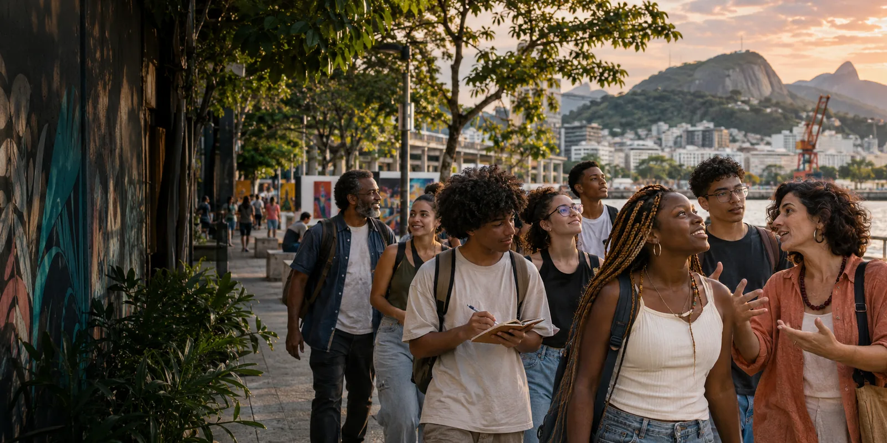

Cultura · território · memória
Rio de Janeiro
em movimento
Uma imersão cultural de cinco dias que conecta estudantes, patrimônios e novas formas de ler a cidade.
- 5
- estudantes
- 5
- dias de imersão
- 3
- cursos conectados

Uma cidade como sala de aula Imagem ilustrativa do protótipo